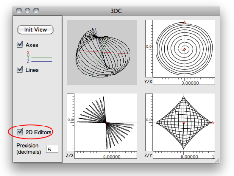

OpenMusic DocumentationHiérarchie de section : OM 6.6 User Manual > Basic Tools > Curves and Functions > 3D Objects > 3DC
OpenMusic DocumentationHiérarchie de section : OM 6.6 User Manual > Basic Tools > Curves and Functions > 3D Objects > 3DC
Navigation : page précédente | page suivante
Attention, votre navigateur ne supporte pas le javascript ou celui-ci à été désactivé. Certaines fonctionnalités de ce guide sont restreintes.
3D Curves
The 3DC Object
| The 3DC object is similar to a tridimensional BPC. The additional "z-points" slots allows the handling of the 3rd dimension of the coordinates. |
Access

To add a 3DC object, type its name or go to the Classes / Basic Tools / 3D menu.
Inputs and Outputs
The 3DC object has five inputs and outputs :
|

Generating a 3DC in OM using the x, y and z coordinates list.
|
3D Visualization
The 3DC editor allows to visualize the curve in a 3D view. It offers basic 3D navigation commands. |
A 3DC and its editor.
|
{kind=link}
Displaying Axes and Colours
The
Axesoption allows to display the x , y , and z axes of the 3D object.Press
bor to change the background colour.Press
cto change the colour or the curve.

Manipulation of the Object
Click on the object and move the mouse to rotate the curve.
SHIFT + click and move up/down to zoom in/out
Use |

|
Edition
The 3DC is only editable from the optional 2D views (see below).
2D Editors
To display the three 2D editors corresponding to projections of the curves on the x/y, x/z and y/z planes, select the 2D Editors option. These editor are similar, and work exactly the same way as standard BPC editors.

On single editor (the last clicked one) is active at a time, and will then respond to key events for moving points, etc.
View and Edition
To zoom in/out on the 2D views the object, click and drag one of the rulers. Use the button  of the palette to restore the original (optimal) view ratio.
of the palette to restore the original (optimal) view ratio.
Use the button  to navigate in a 2D view.
to navigate in a 2D view.
Note : When the Precision value is modified, the view is automatically reset to its original ratio.
Use the stadard BPC edit commands to move or delete points in the 2D editors.
Global Changes
Since any point belong to the three axes, it is displayed in all editors. Consequently, any modification in an editor will affect the two others, as well as the global 3D view.
Precision and Coordinates
To visualize the coordinates of a point, double click on it with the mouse. These coordinates can be edited, just as in a BPC.
The Precision parameter changes the precision of the points with a decimals number.

Precision changes may lead to modifying the points positions by truncating their coordinates values.

Displaying Points or Curves
As in standard BPF/BPC editors, the |
Displaying the points in a 3DC editor
|
{kind=link}
Références :
Plan :
Navigation : page précédente | page suivante
A propos...(c) Ircam - Centre Pompidou